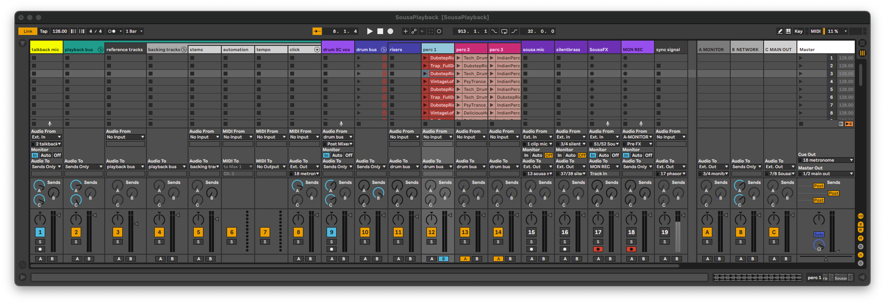

SousaPlayback¶
{kind=link}
Main Track List¶
talkback mic
- This track has a simple channel strip for a talkback mic.
playback bus
reference tracks
This audio track is available for any reference tracks that you may want to add.
backing tracks
stems
This audio track is available for any backing tracks that you may want to add.
automation
A MIDI device that lets you automate two aspects of SousaFX: The Mix Bus mutes and gains, and the Main Preset number.
This device also sends BPM data to SousaFX.
tempo
Automate this tempo device instead of live’s main tempo so that the tempo automation is more easily viewable.
click
A MIDI track with a drum rack that lets you program custom click tracks if needed.
drum bus
Group percussion and send thru EQ, filters, reverb, tremolo, delay, risset, compressor, glue comp. The Drum Bus’s external audio output is intended to be routed to SousaFX to control the ducker.
perc 1
kick and snare clips w/ Stutter
perc 2
percussion clips w/ Beat Repeat, Stutter, Auto Pan
perc 3
percussion clips w/ Beat Repeat, Stutter
Twelve parameters pertaining to the percussion bus tracks are bound to SousaFX.
- mute drumloops
- toggle continuous accelerando
- scene selection
- Drum Clip Crossfade (bi)
- Drum Clip Filters (bi)
- Drum Clip Stutter Enable (trig)
- Drum Clip Tremolo Depth (uni)
- Drum Clip Tremolo Duty (bi)
- Drum Clip Delay Send (uni)
- Drum Clip Delay Param (bi)
- Drum Clip Reverb Send (uni)
- Drum Clip Reverb Param (bi)
sousa mic
Record the uneffected tuba mic into this track, and playback the recorded clip into SousaFX to allow yourself to fine-tune the effects and bindings without having to play the tuba.
This track’s “Audio To: Ext. Out” should loopback to SousaFX’s “prerecorded mic” input, and SousaFX’s Audio IO Status’ input menu should be set to
prerecorded mic.silentbrass
Record the uneffected silentbrass mic into this track, and playback the recorded clip into SousaFX to allow yourself to fine-tune the effects and bindings without having to play the tuba.
This track’s “Audio To: Ext. Out” should loopback to SousaFX’s “prerecorded silentbrass” inputs, and SousaFX’s Audio IO Status’ input menu should be set to
prerecorded silentbrass.MAIN REC
Records the main “front of house” output. Doesn’t record SousaFX.
sync signal
Syncs SousaPlayback to SousaFX via a 1-bar audio-rate phasor that ramps from 0 to 1 in lieu of Live Link.
This track’s “Audio To: Ext. Out” should loopback to SousaFX’s “phasor~ from Ableton” input. To enable phasor sync, Set SousaFX’s Metronome’s Tempo Source to
Ableton's Tempo, set the Live Link menu to Audio Input, and press Ableton’s play button.
Return Track List¶
Monitor
This track’s “Audio To: Ext. Out” should be routed to your audio interface’s headphone output.
The monitor mix, adjusted via the A sends from talkback mic, playback bus, click, MAIN REC, and NETWORK tracks.
The “playback bus” monitor send volume is also saved in SousaFX’s Monitor Mix.
Network
Place network jamming plugins here.
Main Out
This track’s “Audio To: Ext. Out” should be routed to your audio interface’s main output.
The “front of house” mix, adjusted via the C sends from talkback mic, playback bus, MAIN REC, and NETWORK tracks.
{kind=link}